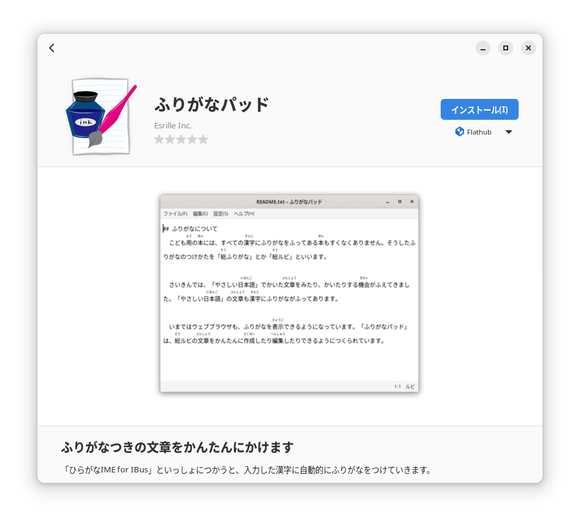

インストール方法
つかっているOSがFedoraかUbuntuであれば、かんたんに「ふりがなパッド」をインストールすることができます。また、Linuxのアプリストア「Flathub」から「ふりがなパッド」をインストールすることもできます。
Fedoraのばあい
Fedora用のソフトウェア パッケージはCoprプロジェクト「@esrille/releases」から提供しています。このCoprプロジェクトを有効にするには、いちど、コマンドラインからつぎのように実行します。
sudo dnf copr enable @esrille/releases
あとは、dnfコマンドで「ふりがなパッド」をインストールできます。
sudo dnf install furiganapad
Ubuntuのばあい
Ubuntu用のソフトウェア パッケージはPPAレポジトリ「esrille/releases」から提供しています。このPPAレポジトリを有効にするには、いちど、コマンドラインからつぎのように実行します。
sudo add-apt-repository ppa:esrille/releases
あとは、aptコマンドで「ふりがなパッド」をインストールできます。
sudo apt update
sudo apt install furiganapad
Flathubからインストールする方法
Flathubからインストールするときは、GNOME Softwareを利用するのがかんたんです。GNOME Softwareが起動したら、ルーペのアイコンをクリックして、「ふりがなパッド」をさがします。英語環境のときは、「furiganapad」と入力してさがしてください。一覧から「ふりがなパッド」を選択すると、インストールすることができます。

Flathubからインストールしたソフトウェアは、それぞれ専用のサンドボックスのなかで実行されます。サンドボックスは、インストールしたソフトウェアが不正なことをおこなえないようにします。ふりがなパッドのばあいは、ユーザーが指定したファイル以外にはアクセスできなくなります。そのため、以前ひらいていたファイルを自動でひらく機能などは一部、制限されます。
ヒント: UbuntuでFlathubを利用したいときは、いちどコマンドラインからつぎのように実行してください。Fedoraでは、GNOME Softwareがはじめからインストールされています。
sudo apt install flatpak gnome-software-plugin-flatpak
flatpak remote-add --if-not-exists flathub https://flathub.org/repo/flathub.flatpakrepo
ソースコードからインストールする方法
「ふりがなパッド」をソースコードからインストールしたいときは、つぎの手順でインストールできます。
git clone https://github.com/esrille/furiganapad.git
cd furiganapad/
meson setup --prefix /usr _build
ninja -C _build
sudo ninja -C _build install
ビルドするときに必要なパッケージについては、debian/controlのBuild-Depends、あるいは、ibus-hiragana.specのBuildRequiresを参考にしてください。
Fedoraであれば、つぎのコマンドでビルドに必要なパッケージをインストールできます。
sudo yum-builddep ibus-hiragana.spec
Ubuntuであれば、つぎのコマンドでビルドに必要なパッケージをインストールできます。
sudo apt build-dep .
ソースコードからビルドした「ふりがなパッド」をアンインストールするには、つぎのようにします。
sudo ninja -C _build uninstall